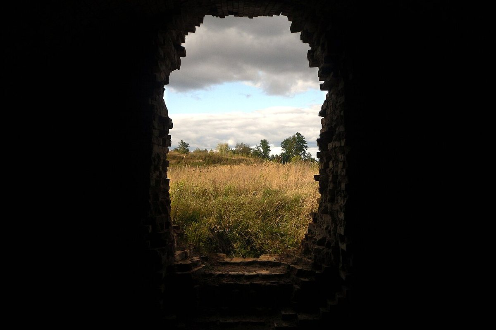
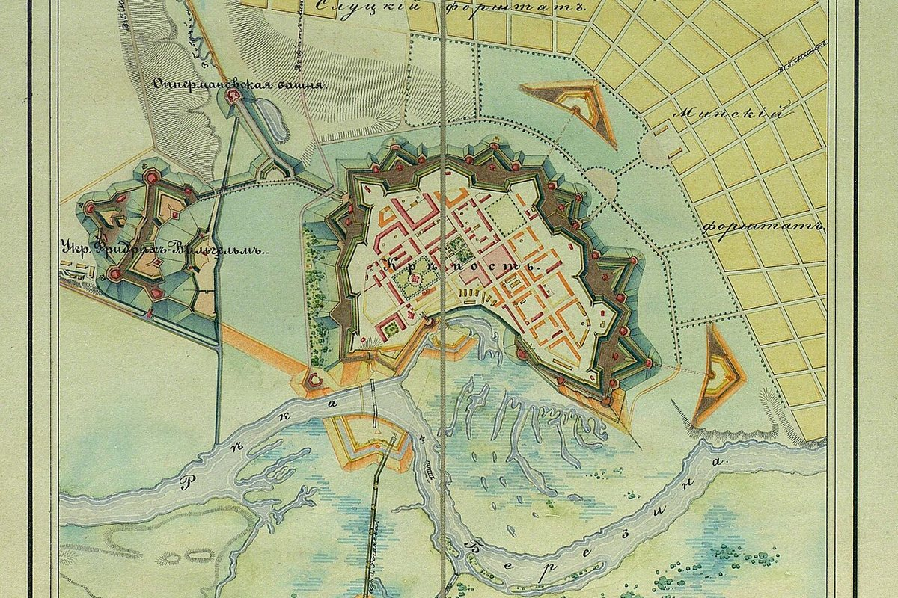

A monument of fortification art from the first half of the 19th century on the Berezina River. Casemates, redoubts, a lunette and fragments of fortifications survive.
Bobruisk Fortress is a monument of fortification art from the first half of the 19th century. Its design and construction used the most advanced military engineering ideas of the time.
The permanent defensive structures are made of brick and have vaulted ceilings, embrasures, loopholes and ventilation openings. In the lunette on the Berezina bank, staircases, a herringbone brick floor, wooden gates and cast-iron hooks for mounting cannons survive.
Staircases survive in the redoubts, and a watchtower stands in the gorge redoubt of the 5th polygon. It is important to preserve the countermine galleries, caponiers and remains of bastions, ravelins and earthworks.
The fortress is also a monument of urban planning: elements of classicism were used in the decoration of barracks and officers’ houses (architect A. Staubert). Today it is one of the symbols of Bobruisk.

